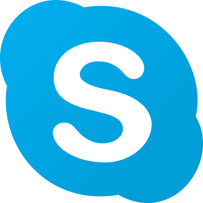

|
 NotSkypeBeta Release |
Day |
| Service / client family | Current status | Notes |
|---|---|---|
| Skype Web Wrapper | Live | Can connect via official NotSkype clients |
| Skype Classic/7 | In development | Currently in development |
| MSN / Windows Live Messenger | Beta | Supports/Tested versions 1.0 - 2009 |
| Suggest a service | Planned | Tell us what you'd like to see supported by NotSkype! |
These features have been tested and are confirmed to work on our service.
| Feature | Notes |
|---|---|
| Authentication | Sign-in, sign-out, with legacy password support for older clients. |
| Contacts & presence | Adding/removing contacts, user presence. |
| Messaging | Private messaging, and group chats where supported by a client. |
| Profile customisation | Display name, profile picture, bio, etc. |
| Cross-protocol chat | Communicate between different protocols on our service! |
Missing something? Let us know what feature you'd like to see.